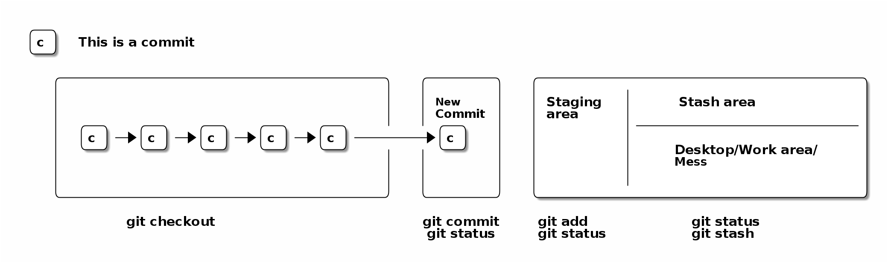

Table of Contents
1 Git Tutorial
- If you want to know whom to
blame(thank!) for the great choice of words. - If you want to know why you did what you did a year ago.
- If you want to save time from manual debugging when latex freaks out again.
- If you want no more "paper-final-final-final-final.tex".
1.1 How git works conceptually
/--\
|c | This is a commit
\--/
+--------------------------------------+ +--------+ +--------------------------------------+
| | | | | | |
| | | New | | Staging | Stash area |
| | | Commit | | area | |
| /--\ /--\ /--\ /--\ /--\ | | /--\ | | |---------------------------|
| |c |-->|c |-->|c |-->|c |-->|c |--------->|c | | | | |
| \--/ \--/ \--/ \--/ \--/ | | \--/ | | | Desktop/Work area/ |
| | | | | | Mess |
| | | | | | |
| | | | | | |
+--------------------------------------+ +--------+ +--------------------------------------+
git checkout git commit git add git status
git status git status git stash

1.2 Prerequisites
To make this tutorial self-contained, I used some commands that are not git-related.
Please be aware that you are not expected to know anything that does not start with git in this tutorial except for the following:
mkdir data
ls
data
cd data
touch some_data.txt
ls
some_data.txt
# .. means parent directory cd ..
1.3 git init .
We have a project directory called working-paper and there is a data folder in it from 1.2.
ls
data
To start using git,
we init(ialize) the directory working-paper.
This only needs to be done once per project.
git init .
Initialized empty Git repository in /tmp/working-paper/.git/
We can choose to set up a few details about us for the project.
If we don't do this, git will try its best to come up with the values from what it reads from your profile.
git config user.name "Yi Wang" git config user.email "wangy95@qut.edu.au"
We then check if git knows who we are.
git config user.name git config user.email
Yi Wang wangy95@qut.edu.au
Congratulations! We now have set up the basics!
1.4 git status
The second command we want to master is git status.
As the name suggests, it reports current status of the project.
git status
On branch master No commits yet Untracked files: (use "git add <file>..." to include in what will be committed) data/ nothing added to commit but untracked files present (use "git add" to track)
Here is a line-by-line explanation through the above feedback that git status gives you.
# You can have any number of branches # so git status lets you know which branch you are working on On branch master # Because this is a new project, # we haven't committed anything. # We will cover committing in the next section. No commits yet # Untracked means changes to these files are invisible to git, # other than git knows that these files themselves exist Untracked files: # Git is trying to prompt you that # you can use this command to track the file(s) (use "git add <file>..." to include in what will be committed) # The slash (/) means this is a directory. # Git only cares about directories that have files. data/ # A short summary of what our current status is nothing added to commit but untracked files present (use "git add" to track)
I recommend that whenever you want to do git add and/or git commit from the following sections, you first run git status to get an idea of where you are at.
1.5 git add file
We now have a data file in the directory data
and it's time that we ask git to track (monitor) it for us.
git add data/some_data.txt
git add does not give us any feedback so let's use git status to see what is our status now.
git status
On branch master
No commits yet
Changes to be committed:
(use "git rm --cached <file>..." to unstage)
new file: data/some_data.txt
The result seems similar to what we had previously, but certain words have changed, so here is another line-by-line explanation of what is going on.
# We are still on branch master. On branch master # We still haven't made any commits yet. No commits yet # We have changes that can be committed. Changes to be committed: # Git tells us that we can use this command # to un-add (unstage) the file. (use "git rm --cached <file>..." to unstage) # Git now sees the file and recognizes it as a new file. new file: data/some_data.txt
It is worth noting that, in our case, git add data/some_data.txt is the same as git add data/ because git does not track empty directories by default and data only has one file some_data.txt.
We then need to create more files for our paper.
For starters, we want a file called my-great-paper.tex in the project root directory.
touch my-great-paper.tex
We again use git status to check what is going on.
git status
On branch master No commits yet Changes to be committed: (use "git rm --cached <file>..." to unstage) new file: data/some_data.txt Untracked files: (use "git add <file>..." to include in what will be committed) my-great-paper.tex
The above result is kind of what we could understand. We have added a new file called my-great-paper.tex and it's not tracked by git yet.
We now add (stage) it to git.
git add my-great-paper.tex
Again, we use git status to check our status.
git status
On branch master
No commits yet
Changes to be committed:
(use "git rm --cached <file>..." to unstage)
new file: data/some_data.txt
new file: my-great-paper.tex
We now have two files staged using git add.
There is certainly more to the project than we have at the moment, so I'm going to add two more files. One called references.bib for all our references and another called meeting-minutes.txt that might record some useful information.
touch references.bib touch meeting-minutes.txt
And we always rely on git status.
git status
On branch master No commits yet Changes to be committed: (use "git rm --cached <file>..." to unstage) new file: data/some_data.txt new file: my-great-paper.tex Untracked files: (use "git add <file>..." to include in what will be committed) meeting-minutes.txt references.bib
We add (stage) these two files together by listing them after the
git add command (of course you can have more than two files to add/stage).
git add meeting-minutes.txt references.bib
git status
git status
On branch master
No commits yet
Changes to be committed:
(use "git rm --cached <file>..." to unstage)
new file: data/some_data.txt
new file: meeting-minutes.txt
new file: my-great-paper.tex
new file: references.bib
One last thing about git add is that you can do all of the above
in one command when you are sure that they should be grouped together as one coherent change.
To demonstrate this functionality, we again create some files for our project.
mkdir misc
cd misc
touch contact-numbers.csv
touch experiment-expenditures.csv
git status again.
git status
On branch master No commits yet Changes to be committed: (use "git rm --cached <file>..." to unstage) new file: data/some_data.txt new file: meeting-minutes.txt new file: my-great-paper.tex new file: references.bib Untracked files: (use "git add <file>..." to include in what will be committed) misc/
We can now use git add . to stage/add these newly created files all together.
git add .
git status again.
git status
On branch master
No commits yet
Changes to be committed:
(use "git rm --cached <file>..." to unstage)
new file: data/some_data.txt
new file: meeting-minutes.txt
new file: misc/contact-numbers.csv
new file: misc/experiment-expenditures.csv
new file: my-great-paper.tex
new file: references.bib
We are finally ready to conduct our first commit!
1.6 git commit -m "Commit message"
We can now finally commit our changes, which means that these changes will be written in your history book and no one can fake it.
To do this, we use git commit.
The following example uses git commit -m "message".
In case you haven't figured it out already, -m stands for message.
This message you provide is the message that helps you from a year later to understand why you did what you did.
If you feel like you need to do a lot of explaining, we will cover how to provide a long message later. For now, we just provide a short message for the start of our project.
git commit -m "The starting point of our new paper!"
[master (root-commit) 0c9b8bd] The starting point of our new paper! 6 files changed, 0 insertions(+), 0 deletions(-) create mode 100644 data/some_data.txt create mode 100644 meeting-minutes.txt create mode 100644 misc/contact-numbers.csv create mode 100644 misc/experiment-expenditures.csv create mode 100644 my-great-paper.tex create mode 100644 references.bib
Now we've written a lot of stuff in the history book at once and this history is reflected by this value 0c9b8bd.
There is no need to remember/know this value whatsoever because we can always find it. To do that and to read the history book we just wrote, we need to take a little detour to another command called git log.
git log, as its name suggests, reports a log of what we did in the past.
The output is a list of commits that we made.
git log
commit 0c9b8bd37772d407642b8f84b747e8f45072cbb3 Author: Yi Wang <wangy95@qut.edu.au> Date: Thu Jun 11 19:52:12 2020 +1000 The starting point of our new paper!
In the above results, we see the familiar value 0c9b8bd as the starting characters of the line commit 0c9b8bd37772d407642b8f84b747e8f45072cbb3. This means that this commit is identifiable by this strange.
The Author line shows the information we gave git in 1.2, followed by a date stamp. Finally, it comes with the commit message that we gave it earlier.
There is a lot to the git log command (as well as other commands), but here I provide some variations of it to help you get started fast.
Only show one line per commit.
git log --oneline
0c9b8bd The starting point of our new paper!
Get some colors if your command line doesn't do it already. (Unfortunately this result can not be seen here).
git log --color
commit 0c9b8bd37772d407642b8f84b747e8f45072cbb3 Author: Yi Wang <wangy95@qut.edu.au> Date: Thu Jun 11 19:52:12 2020 +1000 The starting point of our new paper!
Of course you can combine them.
git log --oneline --color
33m0c9b8bd The starting point of our new paper!
1.7 Putting it together
We now demonstrate how git status, git add and git commit work together in a basic workflow.
Starting off, we run git status to make sure that there is no changes from previous work that we haven't dealt with.
git status
On branch master nothing to commit, working tree clean
Then we make some changes to our files.
I'm going to write something to my-great-paper.tex file.
echo "% This is my first paper written with the help of git\n%And I hope it all works out.\n" > my-great-paper.tex
Let's see if the change was successful by git status.
git status
On branch master Changes not staged for commit: (use "git add <file>..." to update what will be committed) (use "git checkout -- <file>..." to discard changes in working directory) modified: my-great-paper.tex no changes added to commit (use "git add" and/or "git commit -a")
Optionally, we can use git diff to see what has been changed.
git diff my-great-paper.tex
diff --git a/my-great-paper.tex b/my-great-paper.tex index e69de29..a73bcc6 100644 --- a/my-great-paper.tex +++ b/my-great-paper.tex @@ -0,0 +1 @@ +% This is my first paper written with the help of git\n%And I hope it all works out.
Here's some explanation of what happened.
# Git is comparing what you just did # to what the last commit had for the file # my-great-paper.tex. diff --git a/my-great-paper.tex b/my-great-paper.tex index e69de29..a73bcc6 100644 --- a/my-great-paper.tex +++ b/my-great-paper.tex @@ -0,0 +1 @@ # + means this is added. +% This is my first paper written with the help of git\n%And I hope it all works out.
We are sure that this change is what we need so we stage it.
git add .
git status
On branch master
Changes to be committed:
(use "git reset HEAD <file>..." to unstage)
modified: my-great-paper.tex
In the above results, git knows we changed our existing file my-great-paper.tex so it shows that it's modified. Here, existing means it's tracked by git.
We are happy to commit this staged change.
git commit -m "Add comments in the paper to celebrate first use of git"
[master 58bbd26] Add comments in the paper to celebrate first use of git
1 file changed, 1 insertion(+)
We repeat this to add template from QUT to the file.
cat /mnt/c/Users/thoma/Dev/orgs/brain/Work/ThesisMainFile.tex >> my-great-paper.tex
Routine check.
git status
On branch master Changes not staged for commit: (use "git add <file>..." to update what will be committed) (use "git checkout -- <file>..." to discard changes in working directory) modified: my-great-paper.tex no changes added to commit (use "git add" and/or "git commit -a")
Running git diff now would output a lot of text, so I'm truncating it down a bit to 15 lines just to fit this tutorial. Your command line can display the output fine.
git diff | head -n 15
diff --git a/my-great-paper.tex b/my-great-paper.tex
index a73bcc6..503f2f7 100644
--- a/my-great-paper.tex
+++ b/my-great-paper.tex
@@ -1 +1,55 @@
% This is my first paper written with the help of git\n%And I hope it all works out.
+\documentclass[12pt,twoside,a4paper,openright]{report}
+\usepackage{qutthesis}
+\usepackage{amsmath}
+\usepackage{amssymb}
+%\usepackage{amsart}
+\usepackage{verbatim}
+%\usepackage{nomencl}
+\usepackage{longtable}
+\usepackage{hyperref}
You can see that a lot of contents have been added.
It is worth mentioning that the amount of the contents does not determine when you should stage and commit. Instead, you need to stage and commit when you finish a coherent part.
For example, all I did in the this change was adding template text, which I think is a coherent part no matter how many lines it has.
This way of thinking actually helps you to organize your writing/work better because it forces you to divide your work into small chunks that are easier to tackle.
After saying all that, we can now simply git add and git commit.
git add .
git commit -m "Add template text from QUT"
[master af3e0ec] Add template text from QUT 1 file changed, 54 insertions(+)
And now if we check our log.
git log
commit af3e0ec5d969d3fe3bab819678512fefdbf49bc0 Author: Yi Wang <wangy95@qut.edu.au> Date: Thu Jun 11 21:05:28 2020 +1000 Add template text from QUT commit 58bbd2665b24a617452cbdc9ec8c7e307d961c71 Author: Yi Wang <wangy95@qut.edu.au> Date: Thu Jun 11 20:49:58 2020 +1000 Add comments in the paper to celebrate first use of git commit 0c9b8bd37772d407642b8f84b747e8f45072cbb3 Author: Yi Wang <wangy95@qut.edu.au> Date: Thu Jun 11 19:52:12 2020 +1000 The starting point of our new paper!
1.8 Going back in history
Our project now has 3 commits, wow!
Now I'll copy the rest of the template to the current folder to make it easier for us to work with.
cp -r /mnt/c/Users/thoma/Dev/orgs/brain/Work/QUTThesisTemplate .
git status
On branch master Untracked files: (use "git add <file>..." to include in what will be committed) QUTThesisTemplate/ nothing added to commit but untracked files present (use "git add" to track)
git add QUTThesisTemplate
git status
On branch master
Changes to be committed:
(use "git reset HEAD <file>..." to unstage)
new file: QUTThesisTemplate/Appendix.tex
new file: QUTThesisTemplate/Ch0FrontPart.tex
new file: QUTThesisTemplate/Ch1Introduction.tex
new file: QUTThesisTemplate/Ch2LiteratureReview.tex
new file: QUTThesisTemplate/Ch3.tex
new file: QUTThesisTemplate/Ch4.tex
new file: QUTThesisTemplate/Ch5.tex
new file: QUTThesisTemplate/Ch6Conclusions.tex
new file: QUTThesisTemplate/DelayS.eps
new file: QUTThesisTemplate/DelayS.png
new file: QUTThesisTemplate/QUTLogo.eps
new file: QUTThesisTemplate/QUTLogo.png
new file: QUTThesisTemplate/References.bib
new file: QUTThesisTemplate/ThesisMainFile.pdf
new file: QUTThesisTemplate/ThesisMainFile.tex
new file: QUTThesisTemplate/nomenclature.tex
new file: QUTThesisTemplate/qutthesis.sty
Commit all template files.
git commit -m "Add all template files"
[master 5980162] Add all template files 17 files changed, 4671 insertions(+) create mode 100755 QUTThesisTemplate/Appendix.tex create mode 100755 QUTThesisTemplate/Ch0FrontPart.tex create mode 100755 QUTThesisTemplate/Ch1Introduction.tex create mode 100755 QUTThesisTemplate/Ch2LiteratureReview.tex create mode 100755 QUTThesisTemplate/Ch3.tex create mode 100755 QUTThesisTemplate/Ch4.tex create mode 100755 QUTThesisTemplate/Ch5.tex create mode 100755 QUTThesisTemplate/Ch6Conclusions.tex create mode 100755 QUTThesisTemplate/DelayS.eps create mode 100755 QUTThesisTemplate/DelayS.png create mode 100755 QUTThesisTemplate/QUTLogo.eps create mode 100755 QUTThesisTemplate/QUTLogo.png create mode 100755 QUTThesisTemplate/References.bib create mode 100755 QUTThesisTemplate/ThesisMainFile.pdf create mode 100755 QUTThesisTemplate/ThesisMainFile.tex create mode 100755 QUTThesisTemplate/nomenclature.tex create mode 100755 QUTThesisTemplate/qutthesis.sty
Modify my-great-paper.tex so it can properly reference the separate files in QUTThesisTemplate directory.
After the modification, run git status.
git status
On branch master Changes not staged for commit: (use "git add <file>..." to update what will be committed) (use "git checkout -- <file>..." to discard changes in working directory) modified: my-great-paper.tex no changes added to commit (use "git add" and/or "git commit -a")
Optionally run git diff to see what's changed.
git diff
diff --git a/my-great-paper.tex b/my-great-paper.tex
index 503f2f7..efe322e 100644
--- a/my-great-paper.tex
+++ b/my-great-paper.tex
@@ -21,20 +21,20 @@
\begin{document}
%%%%%%%%%% Front Part: Cover page, abstract, ack, preface
-\include{./Ch0FrontPart} %Ch0FrontPart.tex
+\include{./QUTThesisTemplate/Ch0FrontPart} %Ch0FrontPart.tex
% including title page information, abstract,
% acknowledgement, etc
%%% Body Text
-\include{./Ch1Introduction} %Ch1Introduction.tex
-\include{./Ch2LiteratureReview} %Ch2LiteratureReview.tex
-\include{./Ch3} %Ch3.tex
-\include{./Ch4} %Ch4.tex
-\include{./Ch5} %Ch5.tex
-\include{./Ch6Conclusions} %Ch6Conclusions.tex
+\include{./QUTThesisTemplate/Ch1Introduction} %Ch1Introduction.tex
+\include{./QUTThesisTemplate/Ch2LiteratureReview} %Ch2LiteratureReview.tex
+\include{./QUTThesisTemplate/Ch3} %Ch3.tex
+\include{./QUTThesisTemplate/Ch4} %Ch4.tex
+\include{./QUTThesisTemplate/Ch5} %Ch5.tex
+\include{./QUTThesisTemplate/Ch6Conclusions} %Ch6Conclusions.tex
%%%%%%%%%%%Appendix
% If you don't have any appendix, comment the following line out
-\include{./Appendix}
+\include{./QUTThesisTemplate/Appendix}
%%%%%%%%%%%%References
% The default heading for references is ``Literature Cited''
@@ -52,4 +52,5 @@
\newpage
~~
\cleardoublepage
-\end{document}
\ No newline at end of file
+\end{document}
+
We now use git add and git commit to stage and commit the changes.
I'm going to use them together in this example.
git add .
git commit -m "Properly reference other files in the main tex file"
[master 1c439a9] Properly reference other files in the main tex file
1 file changed, 10 insertions(+), 9 deletions(-)
Git considers changes in terms of lines, so changing
\include{./Appendix}
to \include{./QUTThesisTemplate/Appendix}, even on the same line, is considered first deleting the original line, and then insert the new line.
We now have some more history to go back to.
git log --oneline
1c439a9 Properly reference other files in the main tex file 5980162 Add all template files af3e0ec Add template text from QUT 58bbd26 Add comments in the paper to celebrate first use of git 0c9b8bd The starting point of our new paper!
To go back to a previous version (history), simply use git checkout.
For example, we want to go back to af3e0ec Add template text from QUT.
git checkout af3e0ec
Then we run git log again.
We can see that we are at commit af3e0ec (this commit is at the top of the result from git log).
git log --oneline
af3e0ec Add template text from QUT
58bbd26 Add comments in the paper to celebrate first use of git
0c9b8bd The starting point of our new paper!
To prove that, we can check our current working directory.
ls
data meeting-minutes.txt misc my-great-paper.tex references.bib test
We can see that the QUTThesisTemplate directory is gone!
We have successfully made it back in time!
1.9 git blame
Suppose someone edited our great paper…
echo "Catch me if you can" >> my-great-paper.tex
And then the changes are staged (added) and commited.
git add .
git commit -m "Explain why we need git"
[master 7f3f739] Explain why we need git 1 file changed, 1 insertion(+)
git blame my-great-paper.tex
7f3f739b (Yi Wang 2020-06-11 16:51:08 +1000 1) Catch me if you can